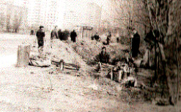
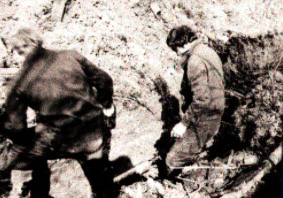
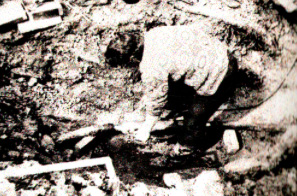
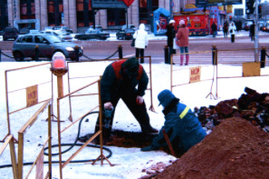
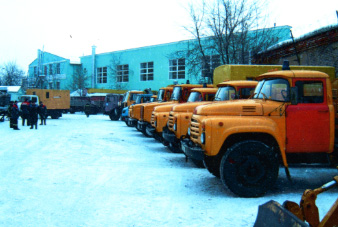
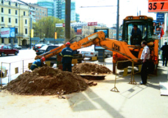

Факс.: (495) 370-00-08
История ОАО "МКЭР"
Приказом Министра энергетики и электрификации СССР от 15 октября 1979 года № 276 в составе «Мосэнерго» было образовано специализированное предприятие по ремонту кабельных электрических сетей «Москабельэнергоремонт» (СП МКЭР).
СП МКЭР был организован как основной подрядчик Московской кабельной сети (МКС). Основной задачей СП МКЭР являлись сложные и особо сложные ремонты и перекладка кабельных линий, давая, тем самым, возможность МКС своими силами выполнять другие работы для скорейшего подключения потребителей.
Необходимость создания специализированного предприятия в те годы диктовалась необычайно сложными условиями, в которых оказались МКС. Сводка поврежденных кабельных линий достигала нескольких тысяч и имелась тенденция к ее росту.
При создании СП МКЭР ему были переданы 2 бригады кабельщиков от аварийно-восстановительной службы МКС, 1 экскаватор, 1 кабельная мастерская и 1 лаборатория. Начиная свою работу с двух бригад кабельщиков СП МКЭР начал энергично развиваться за счет расширения фронта работ, набора персонала, создания материальной базы. В течение нескольких лет с помощью СП МКЭР ситуация по восстановлению поврежденных кабельных линий была переломлена.
К 1990 году СП МКЭР имел высокопрофессиональный коллектив, способный выполнять работы по ремонту и перекладке кабелей любой сложности, хорошее техническое оснащение и прекрасную материальную базу. Работы по ремонту и монтажу кабельных линий обеспечивали четыре цеха, имеющие прекрасные отдельно стоящие здания с просторными раздевалками, комнатами приема пищи и отдыха и т.д.
Гармоничное сочетание высокопрофессионального качества работ, оптимальных бытовых условий, досуговых мероприятий (спартакиады, спортивные соревнования, путевки в лучшие санатории и дома отдыха страны) давало возможность предприятию развиваться.
В 1993 году приказом АООТ «Мосэнерго» № 190 специализированное предприятие по ремонту кабельных электрических сетей «Москабельэнергоремонт» преобразовано в филиал АООТ «Мосэнерго» по ремонту кабельных электрических сетей «Москабельэнергоремонт».
В связи с преобразованиями в электроэнергетике наше предприятие так же прошло ряд реорганизаций в 1996, 2005, 2006 годах. Несмотря на различные трудности в 1996-2001 годах на предприятии частично обновлялась техника, совершенствовались методы работ, использовались передовые по тому времени материалы и технологии. Проводилось переобучение персонала, повышение квалификации.
В 2007 году решением Правления ОАО «Московская объединенная электросетевая компания» было учреждено Открытое акционерное общество «Москабельэнергоремонт». Общество было создано в соответствии с концепцией стратегии РАО «ЕЭС России» на 2003-2008 гг. «5+5», которой предусмотрено создание рынка услуг, участниками которого будут являться независимые ремонтные и сервисные компании, действующие так же в других отраслях, в том числе металлургии, машиностроении, нефтяной и газовой промышленности. Единственным учредителем Общества является открытое акционерное общество «Московская объединенная электросетевая компания», которому принадлежит 100% акций ОАО «МКЭР».
Прошедшие 6 лет компания испытывала различные трудности. Сократились объемы производства работ, количество бригад с высокопрофессиональными работниками, прекратился рост заработной платы. Однако с приходом в 2012 году нового руководства ОАО «Московская объединенная электросетевая компания» и ОАО «Москабельэнергоремонт» ситуация в Обществе стала меняться к лучшему. Оптимизирована структура Общества, усилена основная производственная деятельность, созданы новые направления профессиональной деятельности, закупается новая современная техника, идет переобучение работников предприятия на современные технологии ремонта кабельных линий.
Как следствие возросли объемы производства, улучшилась финансовая стабильность предприятия. В настоящее время ОАО «Москабельэнергоремонт» современное высокотехнологичное предприятие.
Обществу по силе решение полного комплекса работ по строительству, реконструкции и ремонту кабельных и воздушных линий электропередач напряжением 0,4-10 кВ. в любом регионе России. Марка качества нашего предприятия широко известна в профессиональных кругах электроэнергетики Российской Федерации.